人间好时节 @ Sep 09, 2012
春有百花秋有月，
夏有凉风冬有雪，
若无闲事挂心头，
便是人间好时节。
-- 宋·无门和尚《颂》
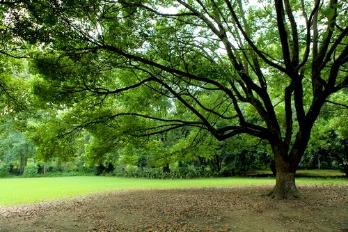
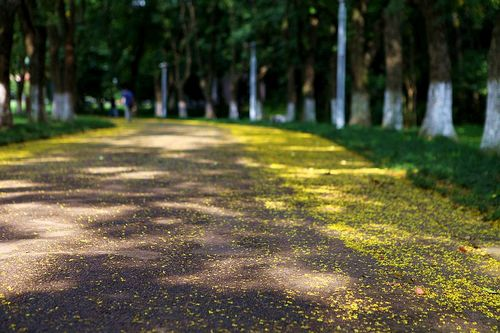
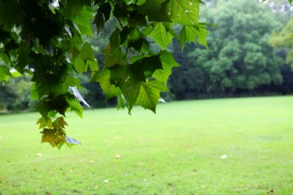
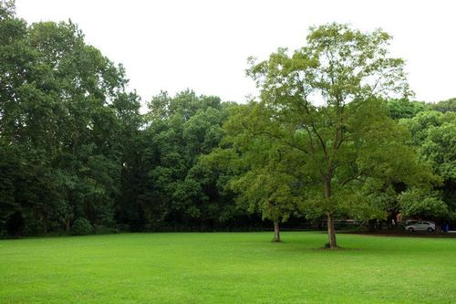
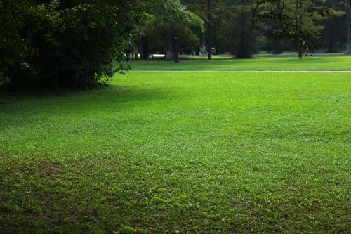
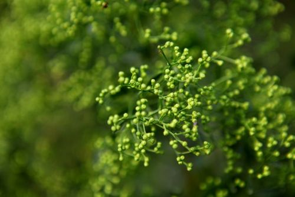
*彼岸花*
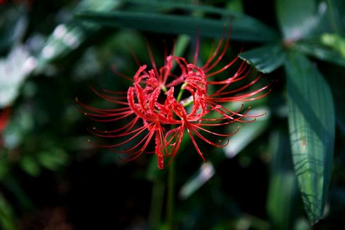
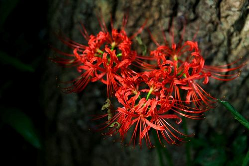
春有百花秋有月，
夏有凉风冬有雪，
若无闲事挂心头，
便是人间好时节。
-- 宋·无门和尚《颂》






*彼岸花*


这里，一片静谧。
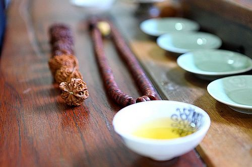
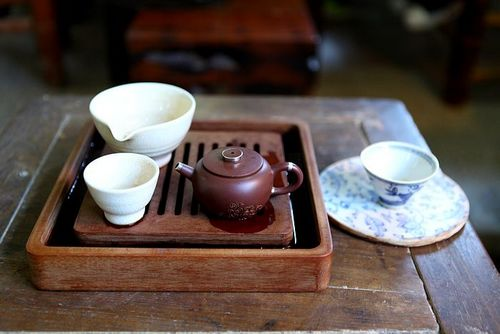
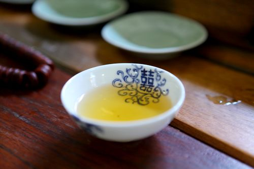
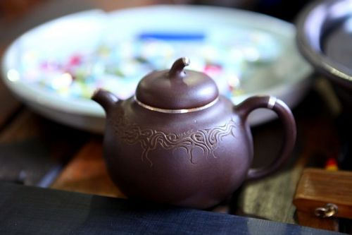
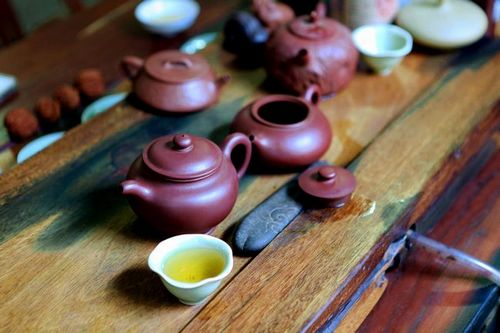
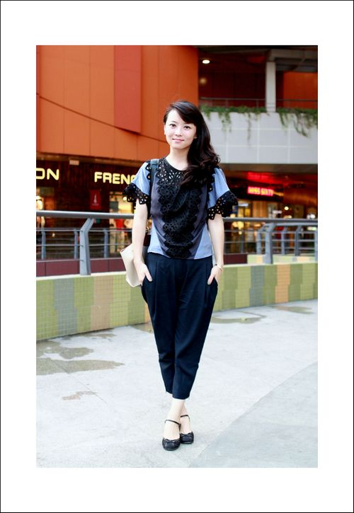
八月，过生日的人是不是很多？满目皆是各人的生日宴，我只是和三两好友吃了个晚饭，简单安静。感叹自己又多活了一年，好好享受现在的自己，加油！
六月二日到达美国，两周时间一直在倒时差，有史以来最长。
一来就生病，扁桃体发炎，之后嗓子一直干疼，可能因为西南部气候原因，每天需要大量饮水。最最奢侈的是美国人几乎都喝瓶装水，两小时不到可以喝下五六瓶瓶装水。美国浪费的还有大排量汽车及空调的过度使用。美国在全球尽其所能的抢资源，国民生活习惯上资源浪费极大。
我在美国第六大城市已经生活了三周，感受是“傻、大、土”，据说全美第二大富人区在此地，转过两趟，因为缺乏绿化和环境，再富的区域也黯然失色。在国内用于房子和汽车上的消费，到这里品质上能提高两三个层次。去当地的广东餐馆和中国超市几次，遇到一些出土级人物，整个世界都在前行，唯独将这些人留在了八十年代？这里一到晚上就是地狱，很多次晚饭后想出去散散步，出于安全考虑还是作罢。当地华人说，一般不出事，要是出事都是大事。带的单反相机一直没拿出来用，直接IPHONE了事。也许我对这里体会还不够多，印象也是浅显粗糙的，但喜好是个人的，这是最真实的反应。
美国的天空真的很蓝。
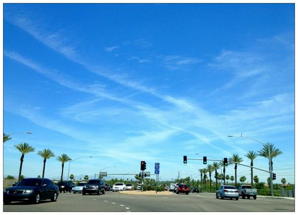
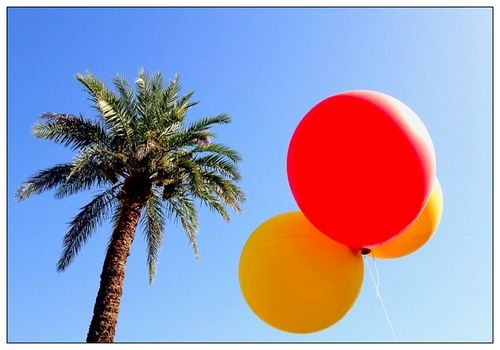
租了辆尼桑Altima S2.5，这款车路上跑的还挺多，第一次在美自助加油。上路前大致了解了下当地交通法规，开始有点儿紧张，后来开得多了也没什么问题。重点是这里永远是车让人，STOP标志一定要停留至少4秒。这与在国内驾车永远需要抢道的习惯相冲突，在国内永远有让不完的行人和车。

租车前借朋友的车开了一周。
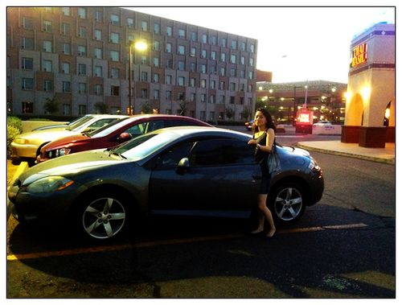
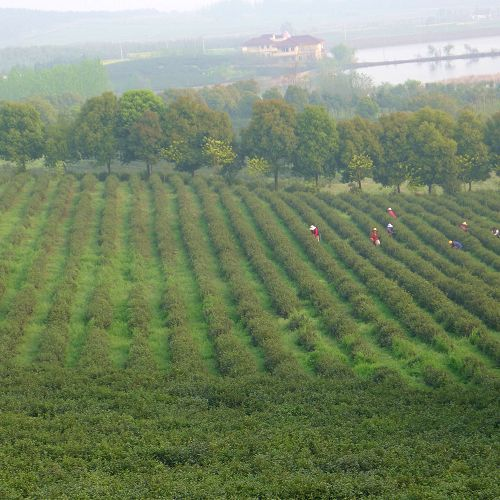

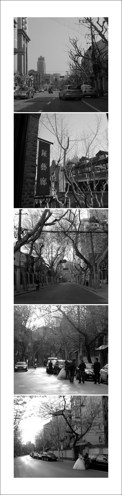
去美国领事馆面签那天在上海的朋友家做客，动手烧了两份菜：蒜叶炒牛肉牛肚、鸡蛋蒸日本绢豆腐。朋友做的土豆泥色拉很好吃，凉拌日式八爪鱼也不错。男主人拿出各种存酒，换酒间隙不知洗了多少次酒杯：）话说为了准备牛肉牛肚，满浦东寻找“紫燕百味鸡”，问了一圈都不知道，后来在梅陇镇楼下的哈根达斯喝咖啡时，随口询问，居然有一个服务员提供了这传奇的地址。这有多奇怪呢？平时这些上海的朋友们都不在家做饭啊？
朋友夫妻二人在日本留学多年，目前在上海工作。两室两厅的房子在浦东不错的位置。家里很干净，没有过多的家具，清爽温馨。所谓幸福不是房子多大，而是enjoy房子里的生活和那个人，象春风微微拂过窗纱，清晨叶片上的露珠，如阳光照进心间。


这次去上海爱上了“三两春”的美食，据说各处生煎包口感不同，三两春的生煎包每每去必点，焦黄松脆，味汁鲜美，这家的葱油拌面也极好吃。店面装修成老上海的怀旧风，本邦菜被各地各国美食侵袭的境况下，三两春的存在彷如一枚经历过岁月腌制后的蜜饯，回味无常，意犹未尽。难忘那餐餐下的上海温情。